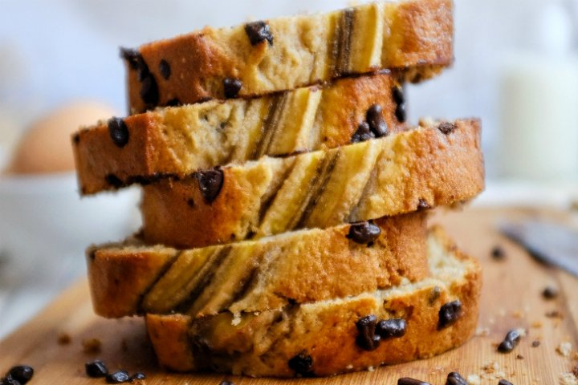

Yemek Tarifleri
Muzlu Kek Tarifi

Muzlu keki, namıdiğer banana bread'i nasıl seviyorum anlatamam. Hem kek hem de muzlu! Daha iyisi ne olabilir ki?
Bu muzlu kekin özelliği ise hem yumuşacık hem de çikolata parçalı olması! Bu tarif için muzları iyice
olgunlaşmaları için saklamanız gerekecek. Haydi sizi çikolata parçacıklı muzlu kek tarifi için mutfağa alalım.
Malzemeler:
- 2
adet orta boy
yumurta
- 2
adet orta boy
muz
- 1
su bardağı (bir parmak eksik)
toz şeker
- 2
su bardağı
un
- 1/2
su bardağı
tereyağı
- 1
paket
kabartma tozu
- 1
çay kaşığı
tarçın
- 1/2
su bardağı
parça çikolata
Nasıl Yapılır?
- Muzları iyice ezip tarçınla karıştırıyoruz önce. Bu bir kenarda beklesin.
- Tereyağı ile şekeri krema kıvamına gelene kadar iyice çırpıyoruz.
- Yumurtaları teker teker ekleyerek çırpıyoruz.
- Ezdiğimiz muzları bu noktada karışıma ekliyoruz.
- İçine elekten geçirerek un ve kabartma tozunu ekleyip baton kek kalıbına döküyoruz.
- Önceden ısıtılmış fırında, kürdan testi yaparak pişiriyoruz. Afiyet olsun.